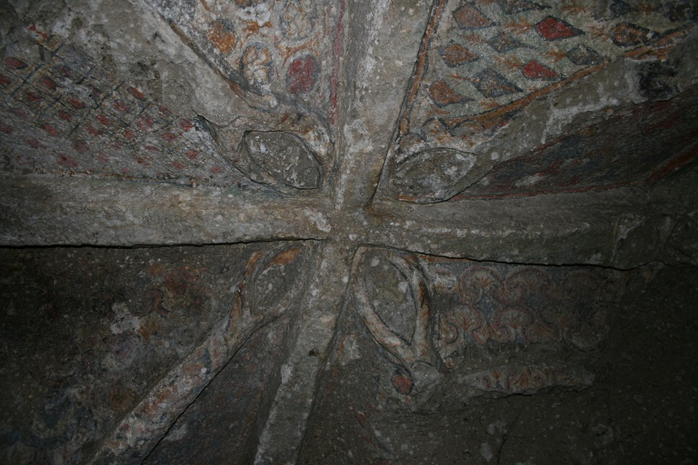

<ons-page id="Scelta">

  <div id="mapid2" style="height: 50%"></div>

  <script type='text/javascript'>

    var roads = L.gridLayer.googleMutant({
       type: 'roadmap'	// valid values are 'roadmap', 'satellite', 'terrain' and 'hybrid'
    })

    var satellite = L.gridLayer.googleMutant({
       type: 'satellite'	// valid values are 'roadmap', 'satellite', 'terrain' and 'hybrid'
    })

    var terrain = L.gridLayer.googleMutant({
       type: 'terrain'	// valid values are 'roadmap', 'satellite', 'terrain' and 'hybrid'
    })

    var hybrid = L.gridLayer.googleMutant({
       type: 'hybrid'	// valid values are 'roadmap', 'satellite', 'terrain' and 'hybrid'
    })

    var albergo = {
      icon: 'fa fa-bed',
      /*iconShape: 'marker',*/
      borderColor: '#000000',
      borderWidth: 2,
      iconSize: [30, 30],
      /*popupAnchor: [100, -10],*/
      popupAnchor: [15, -7],
      innerIconStyle: 'font-size:20px;padding-top:4px;color: #000000'
    };

    var ristorante = {
      icon: 'fa fa-utensils',
      /*iconShape: 'marker',*/
      borderColor: '#000000',
      borderWidth: 2,
      iconSize: [30, 30],
      /*popupAnchor: [100, -10],*/
      popupAnchor: [15, -7],
      innerIconStyle: 'font-size:20px;padding-top:4px;color: #000000'
    };

    var map = new L.Map('mapid2',{
        center: new L.LatLng(42.511,11.625),
        zoom: 13,
        layers: [roads]
    });

    var marker = L.marker([42.5083426,11.6216097], {
      icon: L.BeautifyIcon.icon(albergo),
      draggable: false
    }).bindPopup("<b>Bed and Breakfast Montecalvo</b><br /><br/><div id='trail-rating'><ul class='ratings'><li class='average'><span id='rating' class='rating star3_5'>&nbsp;</span></li></ul></div><br/><div class=\"divTable\"><div class=\"divTableRow\"></div></div><br/><a href='#' onclick=\"fn.load('scheda.html')\">Vai alla scheda</a>").addTo(map);

    L.marker([42.5048292,11.6244851], {
      icon: L.BeautifyIcon.icon(ristorante),
      draggable: false
    }).bindPopup("<b>Agriturismo Rimininello</b><br /><br/><div id='trail-rating'><ul class='ratings'><li class='average'><span id='rating' class='rating star4_5'>&nbsp;</span></li></ul></div><br/><a href='#' onclick=\"fn.load('scheda.html')\">Vai alla scheda</a>").addTo(map);


    var baseLayers = {
        "Standard": roads,
        "Satellite": satellite,
        "Altimetria": terrain,
        "Ibrido": hybrid
    };

    L.control.layers(baseLayers).addTo(map);

  </script>
  <ons-list>
    <ons-list-header>L'eremo di Poggio Conte</ons-list-header>
    <ons-list-item>
      <div class="left">
        <ons-icon modifier="bed" icon="fa-bed" class="list-item__icon" tappable></ons-icon>
      </div>
      <div class="center">
        Dove dormire
      </div>
    </ons-list-item>

    <ons-list-item>
      <div class="left">
        <ons-icon modifier="food" icon="fa-utensils" class="list-item__icon" tappable></ons-icon>
      </div>
      <div class="center">
        Dove mangiare
      </div>
    </ons-list-item>
    <ons-list-item>
      <div class="left">
        <ons-icon modifier="other" icon="fa-shopping-cart" class="list-item__icon" tappable></ons-icon>
      </div>
      <div class="center">
        Altre attività
      </div>
    </ons-list-item>
    <ons-list-item>
      <div class="left">
        <ons-icon modifier="parking" icon="fa-parking" class="list-item__icon" tappable></ons-icon>
      </div>
      <div class="center">
        Parcheggio
      </div>
    </ons-list-item>
  </ons-list>
</ons-page>
